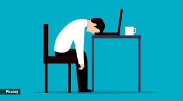
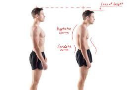
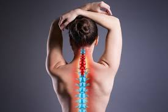
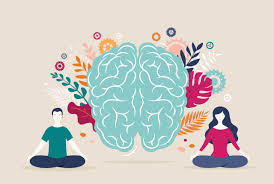

Health Benifits Of Using Our Products
Reduced Risk of Sitting Disease
Prolonged sitting is linked to various health issues like obesity, heart disease, and diabetes. Standing desks allow for more movement throughout the day, reducing these risks.
Improved Posture
Standing desks can help promote better posture as they encourage you to stand upright rather than slouching in a chair.
Increased Energy and Alertness
Standing can boost circulation and increase oxygen flow, which can lead to increased energy levels and greater alertness.
Reduced Back and Neck Pain
Many people experience less back and neck pain when using standing desks, especially if they have ergonomic setups that support proper alignment.
Better Mood and Mental Health
Some studies suggest that standing desks can lead to improved mood and reduced feelings of stress and fatigue.
